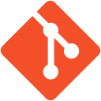

Desarrollo de software, automatización e IA
Trabajo en producto, desarrollo y propuestas técnicas dentro de una empresa familiar de ingeniería y tecnología. Conecto necesidades de negocio con aplicaciones, integraciones y herramientas de IA.
Desarrollo de software,
automatización e IA aplicada.
Desarrollo aplicaciones y herramientas que ordenan procesos, conectan información y reducen trabajo manual.

Vengo de la producción musical y el sonido en vivo. Organizar shows y grabaciones con presupuestos ajustados me enseñó a coordinar personas, cuidar los tiempos y resolver sin bajar la calidad.
Empecé a aprender programación para ganar autonomía: promocionar proyectos, publicar material y construir herramientas que respondieran a lo que necesitábamos. Así fui encontrando en el software una forma de mejorar sistemas, reducir tareas manuales y ordenar la operación.
Hoy trabajo en desarrollo full stack, con especial foco en backend Python y Django, automatización e IA aplicada. Me interesa entender cómo se trabaja realmente y diseñar soluciones que tengan sentido técnico y económico. Mantengo una formación principalmente autodidacta, apoyada en cursos y proyectos.
Trabajo en producto, desarrollo y propuestas técnicas dentro de una empresa familiar de ingeniería y tecnología. Conecto necesidades de negocio con aplicaciones, integraciones y herramientas de IA.
Participé en proyectos de consultoría tecnológica, diagnóstico de procesos y desarrollo de aplicaciones. Mi aporte incluyó trabajo con clientes, diseño de arquitectura, backend e implementación de herramientas para gestión y eventos.
Visité plantas, entrevisté a los equipos y participé en el mapeo de flujos As-Is y el diagnóstico de procesos. Diseñé arquitectura y herramientas con IA para procesar información del levantamiento y apoyar los entregables.
Participé en el desarrollo full stack, con énfasis en backend, de un MVP para automatizar gestión documental, incorporar trazabilidad, roles y validaciones por etapas.
Probado con operarios y datos reales en situaciones de prueba. La solución no llegó a una implementación formal.
Desarrollé una aplicación para subir archivos de audio, obtener transcripciones y generar resúmenes en texto o audio. Pensada para reuniones, notas de voz y grabaciones hechas con el celular, con resultados que se pueden descargar.
Utiliza modelos de OpenAI como opción principal y contempla procesamiento local.
Visitar Transcríbeme.clDesarrollé un sistema para centralizar información que se llevaba a mano o en planillas: costos por prenda, proveedores, producción, ventas e inventario.
Incluye cuentas de usuario para registrar ventas y alertas de stock bajo. El proyecto está en las primeras iteraciones de uso e implementación.
Trabajé en la landing page del evento, las campañas de publicidad en Meta y el sistema de gestión de entradas y acceso.
Las entradas llegaban por correo con un QR. El personal de puerta podía validar el ingreso por QR o nombre, con un rol de usuario para controlar el acceso y los cupos.
Proyecto para detectar y filtrar oportunidades de compra pública, con exploración de APIs y extracción de requisitos desde documentos. El desarrollo combina procesamiento de información con revisión humana y evaluación de la calidad de los datos.
Sonido en vivo y producción de grabaciones con artistas nacionales e internacionales, especialmente del ámbito del jazz. Coordinación técnica con músicos, productores y equipos de radio y televisión.
Operación de sala, preparación técnica de shows y organización de grabaciones en vivo. Trabajo con artistas y equipos de producción para resolver necesidades de sonido, equipamiento y tiempos.
Trabajar con dos y, a veces, tres shows por día me enseñó a coordinar equipos y sostener la calidad bajo presión. Esa experiencia también está detrás de cómo organizo hoy un proyecto de software: anticipar problemas, cuidar los detalles y ayudar a que el equipo trabaje con tranquilidad.
Daniel Maza, Hernán Jacinto y Pipi Piazzolla.
Ingeniería de grabación. Mezcla y mastering realizados junto con Hernán Jacinto.
Argentum Jazz Quinteto.
Asistencia de grabación, ingeniería de mezcla y mastering.
Conjunto distinguido en los Konex 2025Proyecto discográfico.
Ingeniería de grabación, mezcla y mastering.
Conjunto distinguido en los Konex 2025Formación en sonido, grabación y producción musical.
Título obtenido en 2021Cursado avanzado; dos materias pendientes para completar la carrera.
Estudios cursados · sin titulaciónUn año cursado de una carrera de tres años.
Estudios parcialesCursos de programación, backend, IA, emprendimiento y finanzas. Aprendizaje continuado mediante proyectos propios y trabajo con clientes.
Selección de certificados de formación complementaria. Los diplomas originales están disponibles en PDF.
28 de diciembre de 2023 · 15 horas de teoría y práctica
Ver diploma de Prompt Engineering (PDF)31 de diciembre de 2023 · 14 horas
1 de marzo de 2022 · 9 horas
14 de marzo de 2022 · 17 horas
Ver diploma (PDF)18 de marzo de 2022 · 20 horas
Ver diploma (PDF)5 de abril de 2022 · 13 horas
Ver diploma (PDF)8 de abril de 2022 · 14 horas
Ver diploma (PDF)15 de marzo de 2022 · 13 horas
Ver diploma (PDF)
Git Linux Docker Azure Entra ID Azure Key VaultMi formación técnica se apoya en investigar, aprender herramientas y aplicarlas a necesidades concretas.
Entender un proceso y convertirlo en una herramienta que el equipo pueda usar.
Conectar información y herramientas para simplificar el trabajo diario.
Aplicar modelos a documentos, audios y datos, con revisión humana donde hace falta.
Desarrollo: aplicaciones web, APIs y herramientas de gestión con Python y Django.
Automatización: integración de sistemas, sincronización de datos y reducción de tareas manuales.
IA y datos: transcripción y resumen de audio, consulta de documentos y asistencia con revisión humana.
Desarrollo de software, automatización, IA aplicada y diseño de soluciones digitales.